SCULPTURE
My sculptural investigations outline the beginning of my environmental art practice. Inspired by solitary backcountry experiences and dedicated to understanding my relationship to nature, I explore the tension between manmade and natural forms. Through trials of control and chaos, my sculptures work with the flexibility and availability of the media, developing a study aimed at the drama of the living world.
SCROLL
My first series works small, illustrating implied form and empty space. I use palm fronds, twigs and flowers to interpret the impermanence of our impact on the earth. My organic shapes draw movement reminiscent of growth and circularity.
GEOMETRY
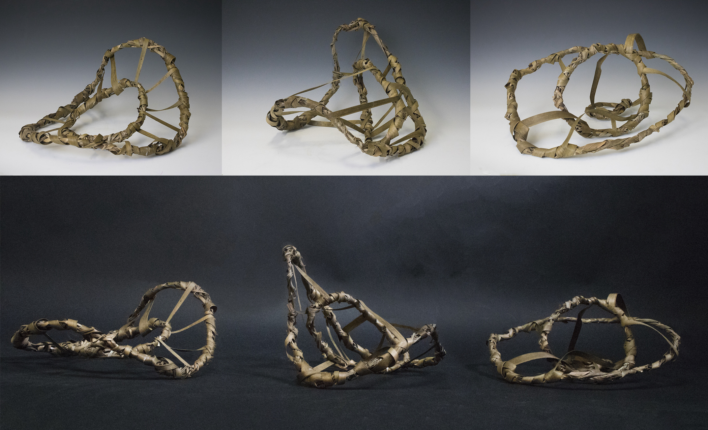
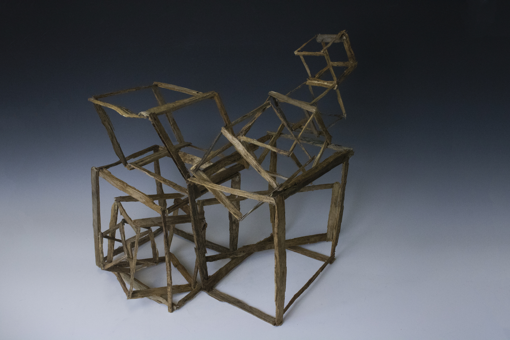
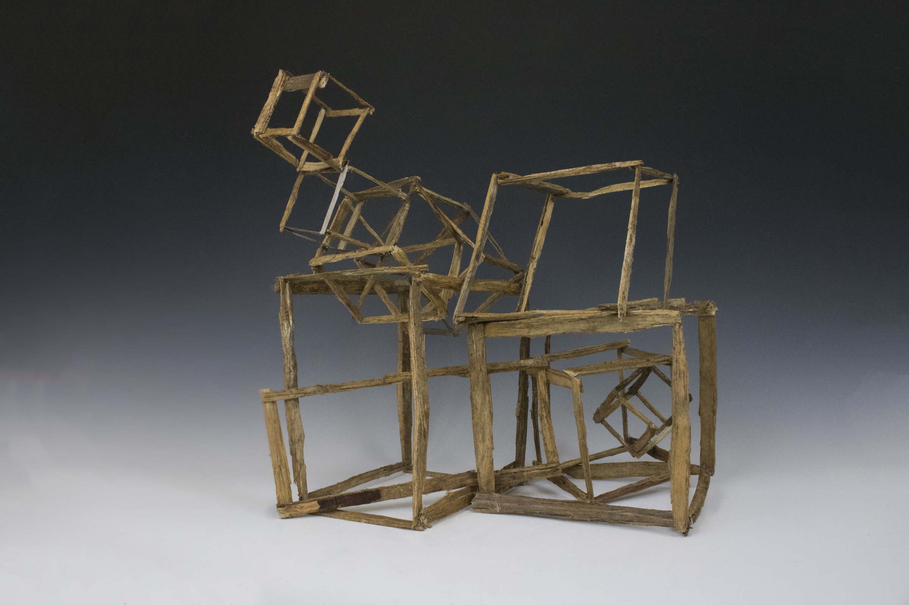
FIGURATION
I then turn to large-scale works. I experiment with plastic material, juxtaposing geometric shapes and mulch to create tension between humans and landscapes. I construct wooden and plastic boxes to play with geometric contrast and explore the exertion of human will on greenery.
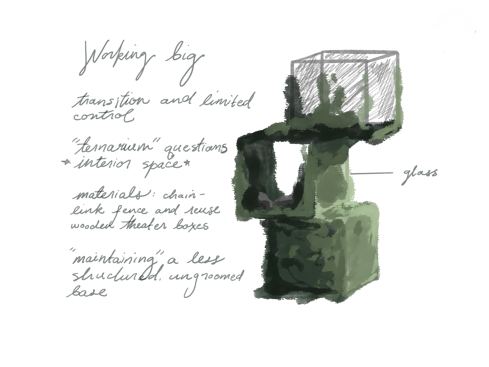
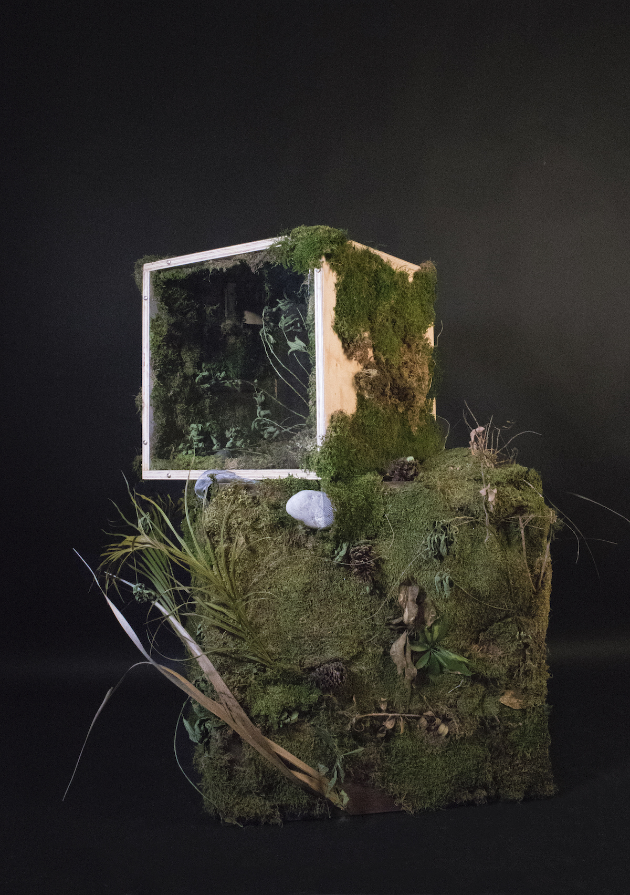
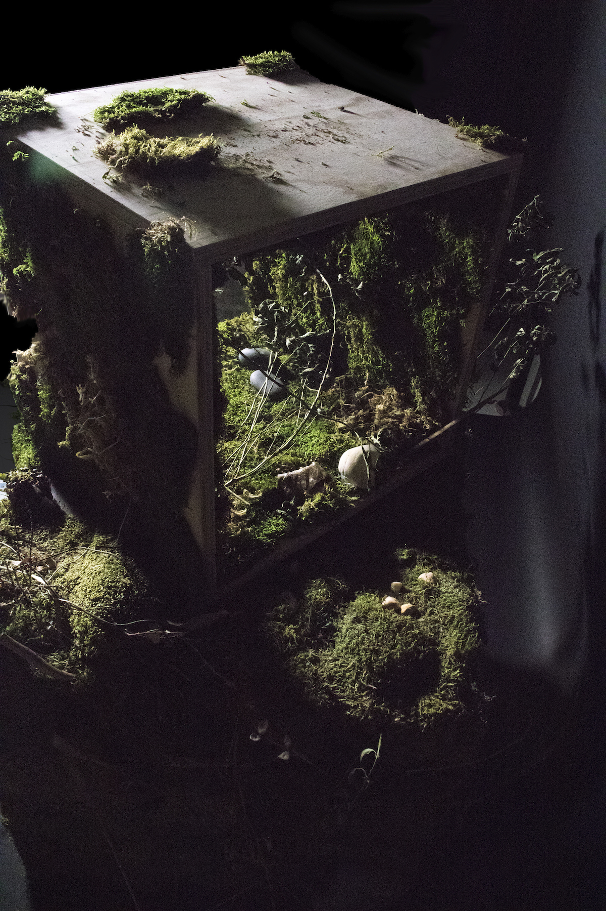

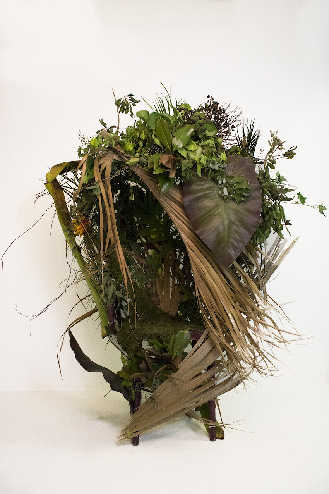
The Chair captures human presence and how we participate in landscapes. The Chair was awarded a Gold Key in the 2020 Scholastics Art & Writing Competition and displayed in the awards exhibition.
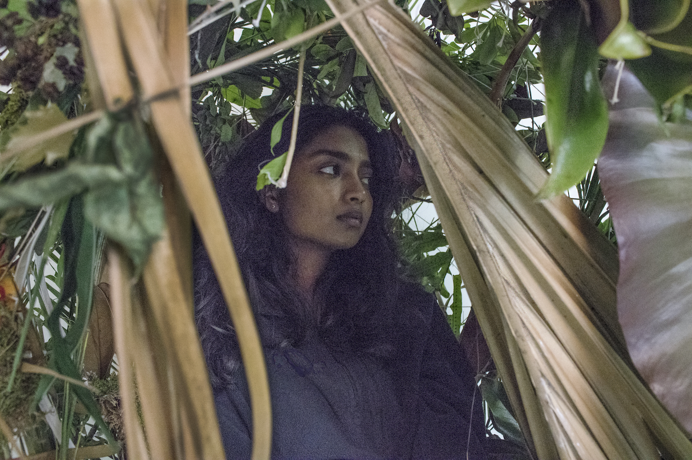